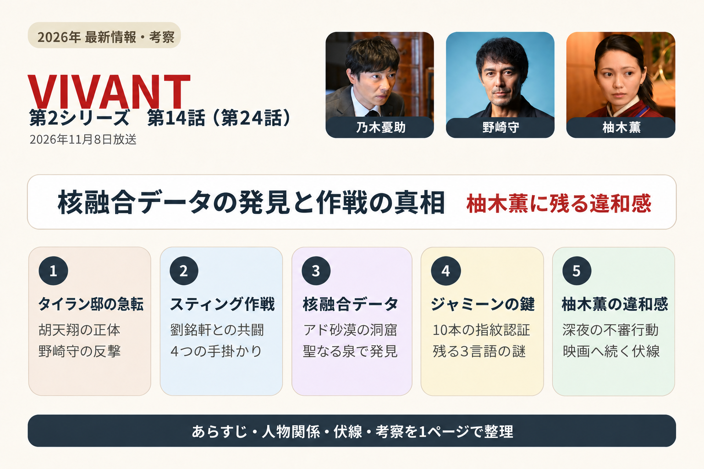
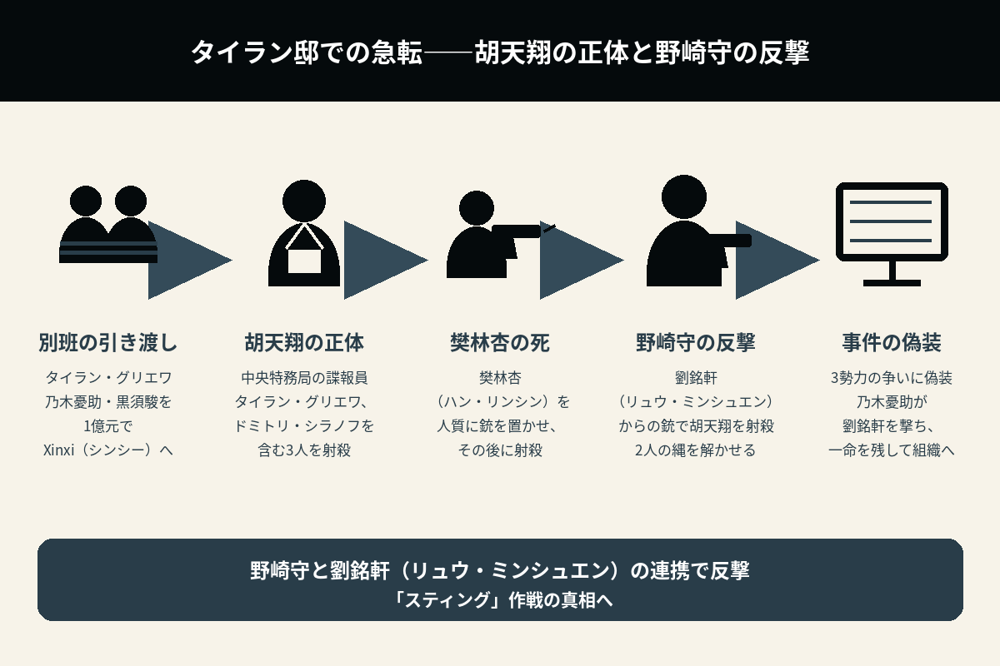
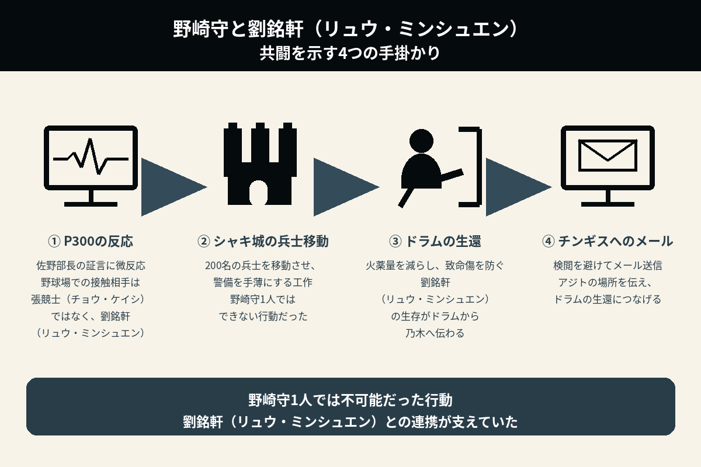
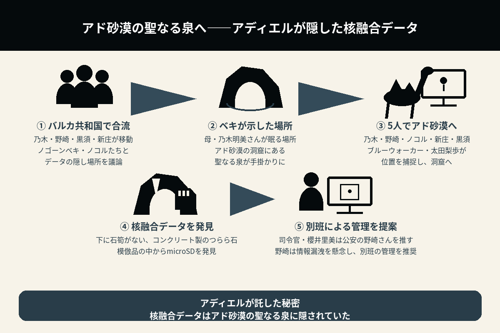

核融合データの発見と「スティング」の真相
柚木薫に残る違和感は、映画へ続く謎なのか
第24話では、タイラン邸での急転をきっかけに、野崎守と劉銘軒（リュウ・ミンシュエン）が進めていた作戦の全容が明らかになる。アディエルが隠した核融合データを追い、乃木憂助たちはアド砂漠へ。一方、柚木薫の言動には、映画へ続く新たな謎を思わせる違和感が残された。
第2シーズンでは、第1シーズンの焼き直しと思われる描写も散見された。一方で、シャキ城での別班員奪還作戦や、チョッキーら新キャラクターの活躍、任務と私情の間で揺れるジレンマなど、新しい試みも見られた。
また、長野専務の正体やアディエルが残した謎など、第1シーズンから持ち越されていた宿題にも答えが示された。
しかし、宿敵の樊林杏（ハン・リンシン）が簡単に射殺される展開には、もっと時間をかけて描いてほしかった。
これは残念な点であり、開始10分程度で決着がついてしまうような描写は、『VIVANT』らしくなかった。シリーズを通して感じていたワクワク感がなく、最も面白くなかった回だと感じた。
開始直後に結末が展開され、その後は種明かしの解説に終始する。この回だけは、期待外れのつまらない構成だった。
11月8日にドラマ最終回が放送されたTBS系日曜劇場『VIVANT』（午後9時）の映画化が、同日の放送のラストで発表された。
ラストで、堺雅人がVTRで登場。
「皆さん、こんばんは。ここまでVIVANT第2シーズンを熱くご覧いただき、ありがとうございます。
さて皆さん、今見て頂いた最終回、第24話、何か違和感を覚えませんでしたか？
その違和感の正体を突き止めるためには、新たな冒険に立ち向かっていく必要がありそうです。
新たな冒険はスクリーンで。今から26日後、12月4日公開です。劇場でお会いできることを楽しみにしております」と伝えた。
TBSはIMAX同時公開も決定したと発表。11月8日深夜0時から、初日4日の前売り上映チケット販売もスタートする。

1. タイラン邸での急転――胡天翔の正体と、野崎守・劉銘軒（リュウ・ミンシュエン）の反撃
第23話のラストで、タイラン・グリエワはXinxi（シンシー）に別班を高値で売り渡そうと取引を持ち掛け、1億元で取引が成立した。
乃木憂助と黒須駿はタイランに捕らえられ、椅子に縛り付けられたまま、Xinxi（シンシー）に身柄を引き渡される。
Xinxi（シンシー）の諜報員・劉銘軒（リュウ・ミンシュエン）は、拘束された乃木と相棒の黒須の前で、核融合の情報を聞いていた野崎守を「さようなら、愛しき人よ」と銃撃し、射殺した。
ドラマ最終話となる第24話は、思わぬところから伏兵が現れる場面から始まり、あっけなく決着を迎えた。
タイランに向かって右奥に立っていた秘書が、実は中国の中央特務局の人間だったことが発覚する。
秘書の胡天翔は、中央特務局に所属する諜報員であり、Xinxi（シンシー）を監視していた。
胡天翔は、タイランと、秘書でロシアの工作員でもあるドミトリ・シラノフを含む3人を射殺する。
そして、樊林杏（ハン・リンシン）を殺されたくなければ銃を置くよう、劉銘軒（リュウ・ミンシュエン）に要求した。
劉は銃を置いたが、秘書はハンも撃ち殺した。
すると、背後から撃たれたはずの野崎が起き上がる。劉からこっそり渡されていた銃を使い、秘書・胡天翔を制圧して射殺した。
野崎守は、劉に「うまくいったな、スティング」と叫ぶ。そして、劉に2人の縄を解くよう指示する。
劉や乃木たちは、ロシアの工作員とシンシー、中央特務局が、核融合案件を巡って争ったことに偽装することにした。
乃木は、劉がシンシーに残れば、今後も野崎の役に立てると考える。
乃木は劉を撃つが、一命を取り留められるようにした。野崎は劉に「再見（ザイジェン）（またな）」と伝える。
核融合研究者のエリシャ・ママドフは首をつっていたが、乃木たちは彼の遺体を日本へ運ぶことにした。
遺骨をジャミンのそばに供えるためだ。
野崎は屋敷を出ると、新庄浩太郎を一発殴り、「2年もだましやがって。大したもんだ」と告げ、それで終わりにする。

2. 野崎守と劉銘軒（リュウ・ミンシュエン）の共闘――乃木が気付いた4つの手掛かり
車の中で、野崎は乃木に、劉のことにはいつ気が付いたのかと尋ねる。
乃木は、順を追って説明した。
（1）佐野部長への尋問の際
P300が虚偽判定にまでは至らなかったものの、わずかに反応したことに違和感を覚えた。
それは、張競士（チョウ・ケイシ）が現れたと証言した瞬間だった。
第2シリーズ 第6話（第16話）｜2026年8月30日放送
佐野部長は、5年前に北京から戻った野崎の前に、張競士（チョウ・ケイシ）が現れたと証言していた。しかし、実際に現れたのは、劉銘軒（リュウ・ミンシュエン）だった。
この時点で、野崎と劉ミンシュエンの作戦は、すでに始まっていた。
野崎守が日本へ戻った1か月後、張競士（チョウ・ケイシ）から接触を受け、野球場で会って話していた場面である。
実際に野球場で話していたのは、張ではなく劉だった。この時から、野崎と劉はつながっていたのだ。
佐野部長は、劉が生きていることや、進行中の作戦があることを、別班に隠し通そうとしていた。
（2）シャキ城
シャキ城から、200名の兵士が移動したことも手掛かりだった。
200名の兵士をシャキ城から移動させ、警備を手薄にすることで、奪還しやすい状況を作っていた。
これは、野崎さん1人でできることではない。
（3）ドラムの生還
火薬量を減らした銃で撃つことで、ドラムを殺さずにアジトから脱出させ、乃木たちに情報を渡すことに成功した。
リュウが生きていることは、ドラムから乃木に伝わった。
（4）チンギスへのメール
検閲に引っ掛からないよう、劉からチンギスへメールを送らせた。
チンギスにアジトの場所を伝えることで、ドラムを生還させた。
野崎守が劉銘軒（リュウ・ミンシュエン）と裏でつながっていることは、たびたび示唆されていた。
野崎1人では不可能な行動には劉が関与しており、ずっと以前から、野崎と劉は結託していたのだ。
野崎と劉は、互いに示し合わせて、一連の計画を実行していた。
野崎は劉に、ドラムをどんな場所にも帯同させるよう指示し、情報を共有させていた。
シャキ城から200名の兵士が移動したことや、チンギスに送られたメールなど、野崎1人では不可能な行動には劉が関与していた。そのヒントは、物語の中で少しずつ示されていた。

3. 死をもって償うべき重罪を負った人物――野崎守の説明と「スティング」作戦
Xinxi（シンシー）への潜入をもくろんで画策し、別班を売り、和田貢が殺害される原因を作った張本人である野崎守。
第2シーズン中盤以降、拘束されてからは動きの少なかった野崎だが、裏では活発に動いていた。
画面に映らないところで事態が進展する、『VIVANT』らしい展開である。
Xinxi（シンシー）における劉のランクは、中の下だった。
そのため、核融合研究の責任者にまで、早急に昇格させる必要があった。
野崎は、別班員が1人犠牲になったことについて、黒須に「申し訳ないと思ってる」と謝る。
黒須は、「別に恨んでない」「この諜報という世界の宿命だと思ってる」と伝える。
なぜ野崎は、知り得た別班のメンバーのうち、乃木だけを売らなかったのか。
野崎の答えは、「別格だから」だった。
諜報員の気配や匂いには気付くものだが、乃木のことは全く分からなかったからだと、野崎は黒須に答えた。
これは、映画『スティング』になぞらえた作戦だった。
『スティング』は、ポール・ニューマンとロバート・レッドフォードが主演した、1973年のアメリカ映画である。
野崎は牢屋で劉に作戦を伝える際、「スティングだよ、スティング」と話していた。
毛じいさんは、2年前にオーストラリアで、別の身分で亡くなっていた。
だからこそ、毛じいさんの名前を使ったのだ。
では、なぜジャミーンの居場所について、乃木の家まで明かしたのか。
野崎の答えは、ドラムに火を付け、必死で外に出ようとさせるためだった。
火薬量を半分にした22口径の銃を使い、致命傷を防ぐよう、劉に指示していた。
4. アド砂漠の聖なる泉へ――アディエルが隠した核融合データの発見
乃木、野崎、黒須、新庄は、アゼルバイジャンからバルカ共和国へ移動した。
ノゴーンベキ・ノコルたちと合流し、アディエルがどこに核融合データを隠したのかを議論する。
ノゴーンベキが、解決の糸口を話してくれた。
アド砂漠の中にある、母・乃木明美さんが眠る場所にあるはずだと語った。
若い頃、カザスタンに追われ、ベキ達は必要に迫られてアド砂漠へ逃げ込んだ。
入り口をカザスタンに塞がれ、籠城戦に持ち込まれた。
アディエルが岩場で偵察していた際、奥の洞窟で湧き水を発見した。ベキ達は、追っ手が去るまでの1か月間、そこで耐え忍んだ。
ベキは明美の遺骨を、身寄りのない孤児の遺骨と一緒に、聖なる泉に納めた。
乃木、野崎、ノコル、新庄、黒須の5人は、ラクダに乗ってアド砂漠へ入った。
そして、現在は乃木の母・明美さんの骨壺があるという洞窟にたどり着く。
ブルーウォーカー・太田梨歩が、乃木たちの位置を捕捉していた。
洞窟には、下に石筍がない、コンクリート製のつらら石の模倣品があった。その中から、microSDが見つかった。
アディエルが隠したデータは、洞窟の聖なる泉で発見されたのだ。
司令官・櫻井里美は、核融合データを持つのは、核融合研究者エリシャ・ママドフの存在を突き止めた、公安の野崎さんであるべきだと断言した。
しかし、野崎は、公安では情報が漏れる可能性があるとして、別班の管理下に置くことを推奨した。

5. ジャミーンの指紋で解かれたロック――使われなかった3言語の伝言
柚木薫は、ハヤトさんから事情は聞いたと言い、自ら進んでジャミーンを連れ、バルカ共和国へ来た。
この行動には、違和感を覚えた。
なぜ、乃木から頼まれたわけでもないのに、自らバルカ共和国へ行くと言ったのか。
ジャミーンが10本の指の指紋認証を通過し、乃木・黒須によって、核融合データは無事に別班の本部へ転送された。
エリシャが話した「とてつもない冒険」は、核融合データの入手ではなく、その先の展開を指している可能性が高い。
野崎は薫さんに、黒須を公安の後輩として紹介した。別班の存在は明かせないからだ。
核融合研究者エリシャ・ママドフは、ジャミーンへの伝言として、一言も間違えずに伝えるよう求めていた。
そのキーワードは、ヘブライ語で「お前は希望の子」、英語で「祝福の中を歩め」、トルコ語で「いつまでも」というものだった。
しかし、ジャミーンが10本の指を認証させるとロックが解除され、あっさりとデータの入手は完了した。
3つの言葉は、使われていない。
ロックを解除するためではなく、データを解き明かすためのキーワードなのか。その点は不明のままだ。
現時点では、データ取得に必要だったのは指紋であり、3つの伝言の必要性は、未回収となっている。
6. 柚木薫との対面で沈黙したベキ――結婚の報告に残る違和感
乃木憂助はベキに柚木薫を紹介し、プロポーズして、結婚の許しを請うた。
ベキは、許すも何も、2人で決めることだと答えた。
しかし、柚木薫と対面したベキは、じっと薫の顔を見つめたまま何も語らず、時間だけが過ぎた。
薫も、どこか張り詰めた表情になっていた。
乃木に促され、「柚木薫と申します。お会いできて光栄です」と頭を下げると、ベキは「ジャミーンを命がけで救ってくれたそうですね。ありがとうございました」と応じた。
あまりにも違和感のある場面だった。
初対面ではないのか。それとも、ベキは薫のことを知っているのか。
ジャミンとも一緒に、改めて暮らすことを告げた。
7. 深夜に起き上がる柚木薫――核融合データと情報機関への疑惑
物語上、薫はジャミーンを連れてバルカへ赴き、乃木憂助のプロポーズを受け入れた。
しかし、ところどころに不穏な描写があり、劇場版への伏線としか考えられない。
ここで、薫の正体に関する疑問が再燃する。
世界医療機構の医師だった薫は、アディエルやジャミーンと交流があり、ジャミーンのお尻に傷があることを知っていた。
傷があることだけでなく、そこにカードがないことも知っていた。
薫は以前から核融合データを探しており、そのためにジャミーンたちと接触したのではないか。そんな疑惑が浮かんでくる。
最終盤には、まさかの柚木薫の不審な行動が描かれた。
乃木が金庫にSDカードをしまった部屋に現れ、シーバリジュースを飲ませた。さらに深夜、就寝中に突然目を開き、眠っている乃木の横で起き上がった。
最終回に来て、タイラン邸にロシア諜報員が絡んでいたことに、野崎守は怪訝な表情を浮かべていた。また、ノコルは、かつてテントがロシア組織に追われていたと語った。
これらも伏線なのだろうか。
乃木は、何かに気付いているのか。
薫はロシア、あるいは第3国の工作員で、金庫のエリシャデータが盗まれているのだろうか。
薫が何らかの情報機関に所属している可能性は、あり得る。
8. ジャミーンはなぜ薫を警戒しないのか――乃木憂助・F・野崎の違いから考察
もし薫が悪なら、人間の善悪を見抜くジャミーンは、なぜ薫を警戒しなかったのかという疑問が残る。
薫は医師としての良心が勝っており、その姿でいる時には見抜かれないのだろうか。
ジャミーンは乃木憂助には懐く一方で、Fを怖がる。
また、別班を売り渡す画策をしていた野崎を怖がっていたが、全てが終わった後の野崎には懐いている。
野崎がジャミーンに「ラクダを見に行こうか」と尋ねると、初めて笑顔を見せて、ついて行った。
薫に対する反応も、これと同じ現象なのだろうか。
9. 乃木は異変に気付いているのか――シーバリジュースと見逃された別班饅頭
乃木は、世界中の諜報員の顔を覚えていると言っていた。
ジュースに睡眠薬が入っていたなら、気付くのではないだろうか。
幸せいっぱいの乃木は、別班饅頭を見逃していた。
何かを企んでいるような薫の表情とも相まって、波乱が予想される。
10. 次回・映画第25話のあらすじ・予告映像
11. 残された伏線が、さらなる謎を呼ぶ
劉銘軒（リュウ・ミンシュエン）が乃木憂助に似すぎている件
5歳から日本で育ったと話している。また、第19話では、日本で生まれたことも判明した。
乃木憂助は、乃木卓が公安警察の身分を隠し、妻の明美とバルカへ渡った後、現地で誕生している。
双子であることを示す伏線はないため、血縁関係が推測される。
ヘブライ語を話す諜報員風の男
第13話のラストでは、エルサレムに密航した野崎が、遺跡のような場所で、ヘブライ語を話す諜報員風の男と密会した。
第14話で、その男は野崎に「ボスに会ってもらう」と告げる。
その後、野崎が樊林杏（ハン・リンシン）と会食する場面へつながったため、Xinxi（シンシー）の部下だと思われた。
野崎は、この諜報員風の男に、ブルーウォーカーが別班に付いたと教えていた。しかし、その情報は、どうもXinxi（シンシー）本部で把握されていないように見える。
Xinxi（シンシー）の部下ではないのだとすれば、さらに謎を呼ぶことになる。
G7鳥取サミット
生存していたノゴーン・ベキが、隣県の奥出雲で療養していたことから、今後の物語に関わる伏線だという見方もできる。
世界的な案件である、エリシャ・ママドフ博士の核融合発明。その解決に、G7が関わるのだろうか。
柚木薫
薫のベキに対する対応。
シーバリジュースを飲ませ、深夜に起き上がる行動。
そして、最後にジャミーンを抱きかかえる際に着けていた、白い手袋。
これらの違和感が、どのようにつながるのか。
ドラマ最終話第24話で新たに分かったこと
| 胡天翔の正体 | 中央特務局に所属する諜報員であり、Xinxi（シンシー）を監視していた。 |
|---|---|
| タイラン邸での決着 | 胡天翔がタイランやドミトリ・シラノフ、樊林杏（ハン・リンシン）を射殺。その後、起き上がった野崎守が胡天翔を射殺した。 |
| 野崎守と劉銘軒（リュウ・ミンシュエン）の関係 | 5年前、野球場で接触していた相手は張競士（チョウ・ケイシ）ではなく、劉銘軒（リュウ・ミンシュエン）だった。2人は以前から協力していた。 |
| 奪還とドラム生還の裏側 | シャキ城からの200名の兵士の移動、火薬量を減らした銃による発砲、チンギスへのメールなどに、劉が関与していた。 |
| 毛じいさん | 2年前にオーストラリアで、別の身分で亡くなっていた。その名前が作戦に使われていた。 |
| 核融合データの隠し場所 | アディエルが隠したmicroSDは、アド砂漠の洞窟にある聖なる泉で見つかった。 |
| 核融合データの管理 | 公安では情報が漏れる可能性があるとして、野崎は別班の管理下に置くことを推奨した。 |
| ジャミーンによるロック解除 | 10本の指の指紋認証でロックが解除され、核融合データは別班の本部へ転送された。3言語の伝言は、この解除には使われなかった。 |
| 柚木薫とベキの対面 | 乃木憂助が結婚の許しを請う一方で、ベキが薫の顔を見つめて沈黙する、不自然な間が描かれた。 |
| 映画へ続く違和感 | 薫が深夜に起き上がる姿や、乃木が別班饅頭を見逃す描写などが残された。放送のラストでは、映画化が発表された。 |
ドラマ最終話第24話の見どころ
第24話は、タイラン邸での急転から始まり、野崎守と劉銘軒（リュウ・ミンシュエン）の作戦の種明かし、核融合データの発見、そして柚木薫を巡る違和感へと進む、ドラマの最終話だった。
まず明らかになったのは、拘束されて動けないように見えた野崎守が、裏では劉と協力し、一連の計画を進めていたことだ。佐野部長への尋問でのP300の反応、シャキ城からの兵士の移動、ドラムの生還、チンギスへのメール。物語の中で少しずつ示されていた手掛かりが、ここでつながった。
画面に映らない場所で作戦が進んでいた点には、『VIVANT』らしさがある。しかし、それによって和田貢が犠牲になった事実が消えるわけではない。黒須が諜報の世界の宿命として受け止めても、野崎守の責任については、簡単に納得できるものではなかった。
また、宿敵の樊林杏（ハン・リンシン）が、冒頭であっけなく射殺される展開には物足りなさが残った。開始直後に決着がつき、その後は種明かしの解説が続く構成は、最終話に期待していた緊張感やワクワク感に欠けていた。もっと時間をかけ、対決そのものを描いてほしかった。
一方、アディエルが隠した核融合データを探し、乃木の母・明美さんが眠るアド砂漠の聖なる泉へ向かう展開は、第1シーズンから続く物語を結び付けるものだった。アディエルに託された秘密が、ようやく具体的な形となって見つかった。
ただし、ジャミーンの指紋でロックが解除された一方で、エリシャ・ママドフが一言も間違えずに伝えるよう求めた、ヘブライ語・英語・トルコ語の3つの言葉は使われなかった。エリシャが語った「とてつもない冒険」が、データの入手ではなく、その先を指すのであれば、ここからが本当の始まりなのかもしれない。
終盤で最も気になるのは、柚木薫の描写だ。自らジャミーンを連れてバルカ共和国へ来たこと、ベキと対面した際の沈黙、シーバリジュース、深夜に起き上がる姿、白い手袋。それぞれが、幸せな結末の中に不穏さを残している。
薫が何らかの情報機関に関わっているのか、核融合データを探していたのか。それとも、別の事情があるのか。現時点では断定できない。また、もし薫に別の顔があるのなら、ジャミーンが警戒しない理由も説明が必要になる。
乃木憂助は、薫の行動に気付いているのだろうか。世界中の諜報員の顔を覚えているという乃木が、別班饅頭を見逃していたことも気に掛かる。
ドラマの中で納得できる完結を迎えてほしかったという思いは残る。それでも、映画第25話では、薫を巡る違和感、使われなかった3言語の伝言、劉銘軒（リュウ・ミンシュエン）と乃木憂助の関係、ヘブライ語を話す男、G7鳥取サミットなどに、どのような答えが示されるのかを見届けたい。